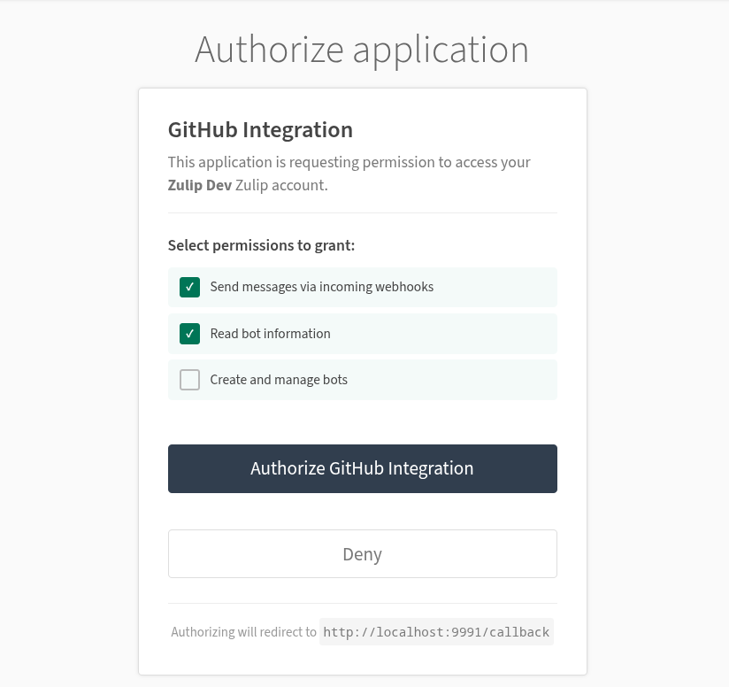
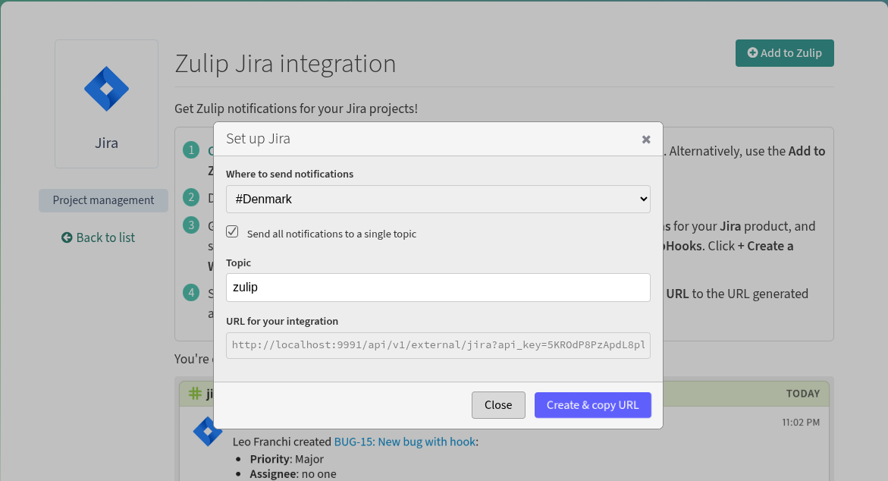

Google Summer of Code 2026 @Zulip
Make Zulip Integrations Accessible:
Bot Permissions Management and OAuth System
About Me
Hi! I'm Dhruv Shetty, a junior undergraduate at the Indian Institute of Technology Kanpur. My journey into programming started from the realization that the tools I used every day were built by people not so different from me. I've always been fascinated by how the collective efforts of a community can bring some complex system to life. This curiosity is what led me to open source.
Over the past few months, "Eat, Code, Sleep" has been my mantra as I started contributing to open source. Developing brings me genuine joy, and my experience in open source has been incredibly fulfilling. Outside of academics, I am a sportsperson, a weightlifter, and also like to play badminton.
General Information
- GitHub: DhruvShetty22
- Zulip Username: Dhruv Shetty
- LinkedIn: Dhruv Shetty
- Personal Email: dhruvshetty2203@gmail.com
- Institute: Indian Institute of Technology Kanpur
- College Email: sdhruv23@iitk.ac.in
- Phone No.: +91 7208520422
- Timezone: Indian Standard Time (GMT+05:30)
Why Zulip?
I discovered Zulip while exploring active open-source organizations to contribute to. During this process, I repeatedly came across Zulip being referenced in the README files of several projects, often highlighted as a platform where they discussed ideas and developed them. This initially drew my attention to the project. As I went through Zulip’s documentation and codebase. I really loved how structured and well-organized everything was. It made it very easy for me to understand the codebase and start contributing.
The code review process here is something which i loved the most. I still remember my first pull request, which I initially thought was ready to be merged, had so much room for improvement that i ended up rewriting almost everything. The level of attention to detail and the emphasis on encouraging contributors to think and question their own decisions to improve their work is what taught me to write better code.
I am honestly very grateful to the maintainers for their time and support. Regardless of the outcome of this GSoC application, I intend to remain an active contributor and be a part of the Zulip community :)
Prior Experiences
While this is my first time contributing to Open Source, I have practical experience from my role as a software development intern at imbesideyou (a Japanese AI startup) and from actively participating in several hackathons. You can also explore my various personal projects some part of course work while some being hackathon projects, on my GitHub profile: DhruvShetty22.
Post GSoC
I learned so much as part of my preparation for GSoC so I plan to continue contributing to Zulip even after the program ends completing the PRs that i opened and guide future contributors. Post GSoC, I also plan to work on a few more orgs other than Zulip to get more exposure. I love this community and would definitely be a part of it in the long run. Thank You :)
Note for Reviewers
This proposal is available as a website. The website is more interactive and contains additional information, so I highly recommend reading the web version for the best experience. Sorry for the inconvenience caused.
My Contributions to Zulip
I started contributing to Zulip in mid-December'25, with my first pull request being #37183. Looking back at it now, I can clearly see how much my understanding of Zulip's coding standards and development workflow has grown since then.
Rather than rushing to open multiple PRs early on, I focused on understanding the codebase and adapting to the review process. This foundation has helped me write more thoughtful, maintainable contributions over time... I believe I did not have much luck with getting a lot of Merged PR, but i think i have done a decent Job reviewing and taking feedbacks and would try to continue doing same I am especially grateful to Niloth for his efforts to review my PRs and guide me through the process.
| PR | Description | Status |
|---|---|---|
::before for status circle to refactor rendering (+71, -3) |
||
* Co-authored with another contributor
A gist of the Problem Statement
Setting up integrations in Zulip can be a daunting process for non-technical users. They are redirected to the administration panel to manually create and configure bots. Furthermore, the bot permission management lacks a user-friendly interface and a backend permissions system for managing bot permissions, making it difficult for users to grant integrations access to their Zulip data.
Overview
-
Backend Bot Permissions System: Design and implement a backend permissions framework to enforce what actions integration bots can perform at runtime, not just at creation time.
-
OAuth Authorization Flow: Implement an OAuth system using the Django OAuth Toolkit, presenting users with a clear consent screen that describes exactly what an integration can access before a token is issued.
-
UI/UX Revamp for the
/integrationsPage: Wire up the existing bot-creation infrastructure directly to the integrations page, replacing the multi-step admin-panel redirect with a single "Add to Zulip" flow.
Backend Bot Permissions System
Problem: Zulip's INCOMING_WEBHOOK_BOT type is documented as write-only, but this is never enforced at runtime. Once a bot has an API key, it can call any endpoint regardless of its type, a webhook bot could read messages it was without the necessary access.
Implementation Plan
1. Centralized access level module — zerver/lib/bot_permissions.py
Rather than scattering is_incoming_webhook checks throughout the codebase, bot access levels are captured in a single module. A BotAccessLevel enum with SEND_ONLY and READ_WRITE value, making the permission tiers explicit. A check_bot_can_access_endpoint() helper raises a JsonableError if a SEND_ONLY bot attempts to reach an endpoint that hasn't been opted in to webhook access:
class BotAccessLevel(IntEnum):
SEND_ONLY = 1 # Incoming webhook bots can only send messages
READ_WRITE = 2 # All other users/bots may have full API access
def check_bot_can_access_endpoint(user_profile: UserProfile, endpoint_allows_send_only: bool) -> None:
"""Raises JsonableError if the bot lacks permission for this endpoint."""
if get_bot_access_level(user_profile) == BotAccessLevel.SEND_ONLY and not endpoint_allows_send_only:
raise JsonableError(_("This API is not available to incoming webhook bots."))
2. Replacing scattered checks in zerver/decorator.py
There are currently two separate inline is_incoming_webhook guards in validate_api_key() and authenticated_json_view(). The new get_oauth2_token_user() introduced in the OAuth flow (see below) would add a third. All three are replaced with calls to check_bot_can_access_endpoint(), removing the duplication and ensuring every auth path enforces the same rule through a single code path.
The enforcement is then wired into the central dispatcher in zerver/lib/rest.py and documented in the OpenAPI.
Relevant Issues
- #16431: Notify bot owners if bot tries to send to a channel it does not have access to
- #22405: Clearly document bot roles
- #37252: Hide disabled action buttons on bots panel for non-admins
- #31389: Allow changing the bot type of a bot user in the "manage bot" modal.
OAuth Authorization Flow
Problem: Integrations currently use API key embedded in the webhook URL /api/v1/external/github?api_key=abc which makes it difficult to limit its scope. The users never see or approve what the integration can do.
Proposed OAuth flow: The user clicks "Add to Zulip" and is redirected to a consent screen at /oauth/authorize/ that lists what the integration can do (e.g. "Send messages via incoming webhooks"). Only after the user approves is an authorization code issued, exchanged for a scoped Bearer token, and returned as the credential in the webhook URL. Each token can be revoked independently without affecting other integrations.
Implementation Plan
1. Scopes and the ZulipScopesBackend
Django-oauth-toolkit lets you define OAuth scopes as a simple key-value list in settings.py, but Zulip needs scopes tied to its bot permission model. ZulipScopesBackend will extend BaseScopes to provide this mapping:
OAUTH2_PROVIDER = {
"SCOPES": {
"webhook:send": "Send messages via incoming webhooks",
"bot:read": "Read bot information",
"bot:write": "Create and manage bots",
},
"DEFAULT_SCOPES": ["webhook:send"],
"SCOPES_BACKEND_CLASS": "zerver.lib.oauth2_scopes.ZulipScopesBackend",
}
The backend is called at two points: once during authorization and then during token creation (to assign the granted scopes to the AccessToken). The scope names are designed to map directly to bot type restrictions from the permissions layer:
2. Bearer Token Authentication — Extending rest_dispatch()
The API request in Zulip pass through rest_dispatch() in zerver/lib/rest.py, which decides how to authenticate it. Currently If a request arrives with a Bearer token instead, it gets rejected as making the entire OAuth flow useless since the tokens it issues would never be accepted inorder to fix this.
If the Authorization header contains a Bearer token, route it through a new authenticated_oauth2_api_view() handler, otherwise fall through to the existing Basic auth path.
elif request.path.startswith("/api") and "Authorization" in request.headers:
auth_type = request.headers["Authorization"].split(None, 1)[0].lower()
if auth_type == "bearer":
target_function = authenticated_oauth2_api_view(...)(target_function)
else:
target_function = authenticated_rest_api_view(...)(target_function)
3. Authorization Consent Screen
The consent screen extends Zulip's portico.html base template so it inherits the standard page chrome. It shows the requesting application's name, all available scopes as checkboxes (with requested scopes pre-checked), and Authorize/Deny buttons. The user can selectively grant permissions before authorizing. A custom ZulipAuthorizationView overrides the default to pass the full scopes dictionary to the template.

Per-Endpoint Scope Enforcement
The prototype grants scopes and attaches them to tokens, to enforce them per-endpoint. The implementation extends the view_flags system already used by rest_dispatch() (e.g., allow_incoming_webhooks) to carry scope requirements:
# In urls.py — scope requirements declared alongside routes
rest_path(
"messages",
POST=(send_message_backend, {"allow_incoming_webhooks", "oauth_scopes:webhook:send"}),
GET=(get_messages_backend, {"oauth_scopes:bot:read"}),
),
This approach keeps scope policy in the URL routing layer where it's auditable in one place, avoids modifying every view function, and follows the same pattern Zulip already uses for allow_incoming_webhooks.
Relevant Issues
- #17042: feature request: Make Zulip an OAuth Provider.
- #452: Support for OAuth2 token authentication for API?
- #38149: Add Discord as an OAuth provider
- #12803: Allow revoking OAuth login
UI/UX Revamp for the /integrations Page
Problem: Every integration's setup page opens with instructions to navigate to Settings → Bots, create a bot manually, copy the API key, and return. The infrastructure for bot creation POST /json/bots handles creation and can_create_incoming_webhooks() already checks the right permissions — none of it is wired to the integrations page. This directly addresses issues #9815 and #692.
Issue #30139 (auto-populate bot avatar) is also related, the "Add to Zulip" flow handles this naturally since the integration is already known from context, so the avatar assigns automatically without an extra selector.

Plan
The full flow from button click to a ready-to-use webhook URL:
"Add to Zulip" button (doc.html)
→ Stream picker modal (add_to_zulip_modal.hbs)
→ POST /json/bots [bot_type=INCOMING_WEBHOOK_BOT, avatar=integration logo]
→ integration_url_modal.ts [pre-filled with new bot's API key + stream]
zerver/views/documentation.pypasses auser_can_create_webhookflag to the integration doc template, derived from existing group-based permission checks.
Note
The button will only be rendered server-side for users who can act on it. Unauthenticated visitors will see a sign-in prompt instead.
Relevant Issues
- #30139: Auto populate bot avatar for webhook integrations bot
- #36564: Improve "Generate integration URL" modal's "Topic" field.
- #33788: Add "copy" button to URL in "Generate URL for an integration" modal
Timeline
I plan to submit small PRs throught for the ease of Review and work on multiple PRs parallely to not get stuck on the review process.
Pre-Community Bonding : April 1st to April 30th
- Dedicate this period to getting existing PRs to a mergeable state, so they don't go stale during GSoC.
- #38599 :Intercom company events
- #38279 :Jira comment-event notifications
- #38481 :Azure Alert integration
- #38650 :Import Slack Canvas posts
Community Bonding : May 1st to May 25th
- I would like this period to be focused on research and preparatory work for my GSoC project, going through the documentation, studying existing work in completion candidates, and even closed WIPs, as there are many I can learn from.
- Most importantly, I will discuss the plan for the coming weeks with my mentors, align on issue priorities, and gather feedback on my open PRs.
Coding Phase 1 : May 26th to July 10th
- Backend Permissions & OAuth Infrastructure : Start by implementing core decorator functions to restrict
INCOMING_WEBHOOK_BOTaccess on read endpoints. The primary issues here are #16431 and #22405. - OAuth Implementation : Extend the API dispatcher to accept Bearer tokens alongside API keys and enforce scope restrictions. No dedicated open issue exists yet, will discuss the approach with mentors early in this phase.
- Integrations Page Revamp : Towards the end of this phase, begin work on the
/integrationspage UX, implementing the "Add to Zulip" button and stream picker modal (#9815).
Midterm Evaluation : July 7th to July 10th
- Deliverables: Working backend permissions system, Bearer token authentication.
- Submit midterm evaluation.
Coding Phase 2 : July 18th to August 16th
- With the internship winding down, I will have significantly more time in this phase. I plan to work on issues that still need feedback or experimentation to move forward.
- Focus areas include the OAuth consent screen and
/integrationpage. (if not completed in Phase 1), along with: - #30139: Auto populate bot avatar for webhook integrations bot
- #36564: Improve "Generate integration URL" modal's "Topic" field
- #33788: Add "copy" button to URL in "Generate URL for an integration" modal These PRs have significant work already done by other contributors which is why i think it would be realistic to complete them in this phase.
Final Week : August 17 to August 24
- Address all outstanding review comments across PRs.
- Final documentation pass covering API boundaries, OAuth scope, and the "Add to Zulip" flow.
- Submit end-of-programme report.
Summary
| Phase | Dates | Focus |
|---|---|---|
| Pre-Community Bonding | Work on existing open PRs | |
| Community Bonding | Research, product decision alignment, mentor discussions | |
| Coding Phase 1 | Backend permissions for Bot and OAuth infrastructure | |
| Midterm Evaluation | Review, buffer, sync with mentors | |
| Coding Phase 2 | integrations page revamp,OAuth scope enforcement, consent screen, UX polish | |
| Final Week | PR reviews, docs, final report |
Availability
I am applying for the 175-hour project. While I would love to take on the 350-hour scope, I want to be realistic as I will be continuing a part-time remote internship alongside GSoC. The internship has flexible hours, and I have been successfully balancing it with college and Zulip contributions since January, so I am confident that I can sustain my commitment throughout the programme.
College will be on break for most of the GSoC period, freeing up substantial time. On weekdays I plan to contribute 1–2 focused hours, with the bulk of my work concentrated on Fridays and weekends. My expected weekly availability is:
| Period | Hours/week |
|---|---|
| Community bonding + internship overlap | 16 – 20 hrs |
| Post-July (internship winds down) | 30 – 40 hrs |